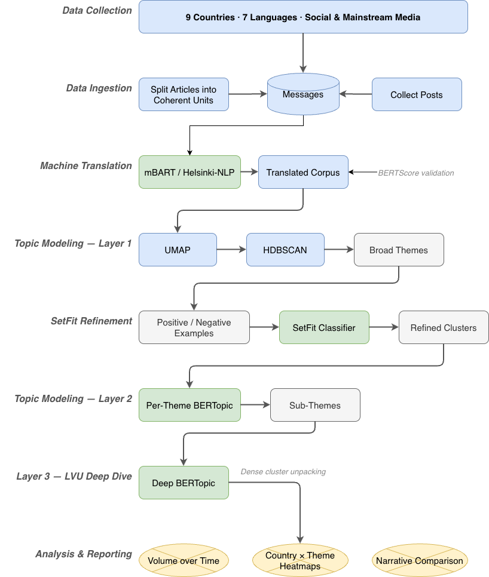

Swedish Institute (Nordic government body)
Sweden's International Image: Multilingual Narrative Analysis
Completed · 2023The Project
Context & Objectives
The Swedish Institute commissioned CASM Technology to analyse the impact of two major international incidents on Sweden's image — the Quran Burning protests and the LVU child welfare law controversy. The analysis mapped how these events were covered and discussed across social media and mainstream media in nine countries across MENA, South Asia and Turkey.
The project required processing content across seven languages simultaneously: Arabic, English, Urdu, Turkish, Persian, Hindi and Indonesian.
My Role
Contributions
Senior Data Scientist. Designed and implemented the full multilingual analysis pipeline — from data ingestion and machine translation through to layered topic modelling and SetFit-guided cluster refinement.
Built the layered topic modelling framework — the LVU corpus in particular presented as a single dense blob with little visible structure, requiring multiple successive BERTopic layers to unpack. SetFit contrastive learning was used between layers to steer the model toward analytically useful clusters, with positive and negative examples provided at each stage to shape the semantic structure before drilling further.
Also designed and implemented the machine translation pipeline (mBART and Helsinki-NLP) and the SetFit classification layer. All core library modules — topic modelling, translation, classification, preprocessing — are my own work.
Scope
Project Scope
- Period: October 2020 – October 2023
- Countries: Egypt, India, Indonesia, Iraq, Iran, Morocco, Pakistan, Saudi Arabia, Turkey
- Platforms: YouTube, Facebook, Instagram, Telegram, 4chan and mainstream news sites
- Languages: Arabic, English, Urdu, Turkish, Persian, Hindi, Indonesian
- Focus: Understanding the impact of two major international incidents — the Quran Burning protests and the LVU child welfare controversy — on Sweden's image across Muslim-majority countries
Method
Approach & Pipeline
Data collected across 9 countries and 7 languages. Non-English content passed through a machine translation layer before analysis. Three-layer topic modelling pipeline applied to the translated corpus:
- Layer 1 — global topic model across the full corpus to surface broad thematic structure
- Layer 2 — per-theme topic models for sub-topic discovery, refined with SetFit few-shot classifiers trained on positive and negative cluster examples
- Layer 3 — deep topic model for LVU narratives specifically, which required further unpacking due to the density of the cluster structure
Outcomes
Results & Impact
Multilingual narrative landscape mapped across 9 countries and 7 languages. Three narrative streams — Quran Burning, LVU, and overlapping narratives — analysed separately and comparatively.
SetFit classifier performance (10-fold cross-validation): mean F1 0.85, mean accuracy 0.86 (range 0.82–0.93 across folds). Human validation agreement reached 0.90 accuracy.
Findings published as part of the Swedish Institute's April 2024 report Sverigebilden efter koranbränningar och LVU-kampanjen, with CASM named as the analytical contractor.
Analysis Pipeline
